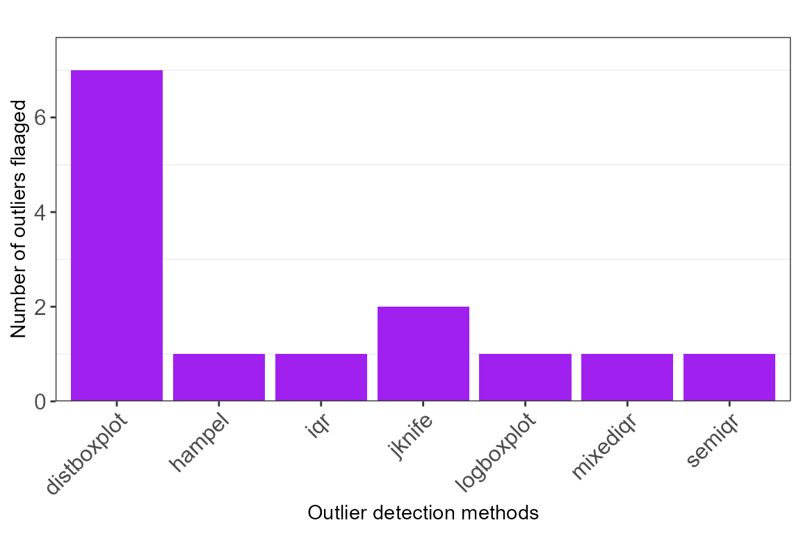
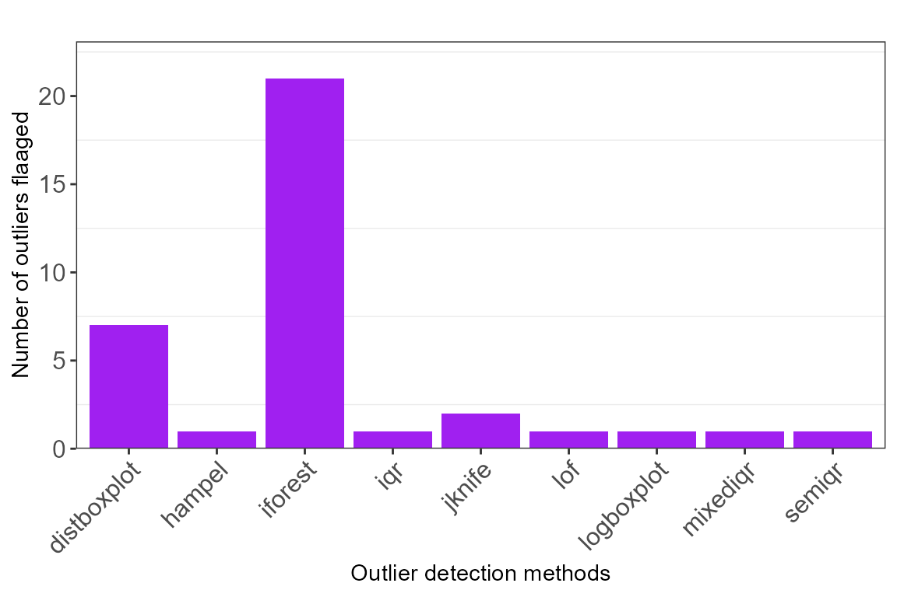

General outlier detection and removal using ensembling principle
Source:vignettes/generaloutlier.Rmd
generaloutlier.RmdThe presence of outliers is a general concern even is data which is not specifically for species distribution modelling. Also, the same approach of adhoc selection of outlier detection method is considered to detect and remove outliers in the data, which increased subjectivity. Therefore, we extend specleanr principle of ensembling multiple outlier detection methods to identify absolute outliers in the datasets which can later be removed. * The same process is followed but the no data extraction and evaluating model performance is required. * Below is a detailed workflow for objectively detecting and removing outlier in iris dataset which is incorporated in the dataset package in R programming Language
irisdata1 <- iris
#add outlier data and NAs
rowsOutNA1 <- data.frame(x= c(344, NA,NA, NA),
x2 = c(34, 45, 544, NA),
x3= c(584, 5, 554, NA),
x4 = c(575, 4554,474, NA),
x5 =c('Setosa', 'Setosa', 'Setosa', "Setosa"))
colnames(rowsOutNA1) <- colnames(irisdata1)
dfinal <- rbind(irisdata1, rowsOutNA1)Detecting outlier in changed iris dataset We can only use
univariate methods to detect only in in variable such as Sepal.Length or
we can exclude the species column and also use multivariate methods such
as isolation forest, Mahalanobis outlier detection method or One class
support vector machines. To identify the methods allowed in this
package, run **extractMethod()**
outlieriris_univ <- multidetect(data = dfinal, var = 'Sepal.Length', multiple = FALSE,
methods = c('mixediqr', 'logboxplot','iqr', 'distboxplot', 'jknife', 'semiqr',
'hampel'),
showErrors = T, missingness = 0.1)
outlieriris_mult <- multidetect(data = dfinal, var = 'Sepal.Length', multiple = FALSE,
exclude = "Species",
methods = c('mixediqr', 'logboxplot','iqr', 'distboxplot', 'jknife', 'semiqr',
'hampel', 'iforest', 'lof', 'mahal'),
showErrors = FALSE, missingness = 0.1)Plotting graphs to identify the different outliers detected by each method
#Only univariate methods
ggoutliers(outlieriris_univ)
#multivariate methods considered
ggoutliers(outlieriris_mult)
clean data extraction
cleandata1 <- clean_data_extract(refdata = dfinal, outliers = outlieriris_univ, loess = TRUE)
#clean dataset
nrow(cleandata1)
#> [1] 153
#reference data
nrow(dfinal)
#> [1] 154
cleandata2 <- clean_data_extract(refdata = dfinal, outliers = outlieriris_mult, loess = TRUE)
#clean dataset
nrow(cleandata2)
#> [1] 153
#reference data
nrow(dfinal)
#> [1] 154